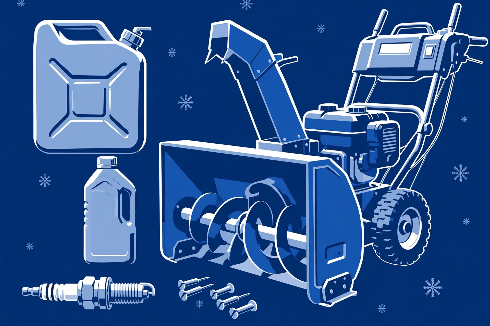

Every November, repair shops fill up with snowblowers that worked fine last March and won't start now. Almost all of them are victims of the same three things: stale fuel, neglected oil, and broken shear pins nobody noticed. This checklist takes about half an hour on a dry fall day and heads off all three. Do it before the first forecast, not after.
1. Fuel: fresh is everything
Stale gasoline is the number-one cause of no-starts. Fuel left sitting in a tank and carburetor over the off-season breaks down and gums up the works — the machine that ran perfectly in April can refuse to fire in November because of it. If there's old fuel in the tank from last season, drain it and refill with fresh fuel. Many owners add fuel stabilizer to their last tank of the season precisely to avoid this; if you didn't, fresh fuel now is the fix. Going forward, make "stabilize or drain" part of your end-of-season routine.
While you're at it, check the fuel lines for cracks or stiffness and make sure the fuel shutoff valve (if your machine has one) opens and closes freely. A cracked line is a fire hazard — replace it before the season, not during.
2. Oil: check it, change it if it's due
Check the oil level with the dipstick on level ground, with the engine cool. If it's low, top it up with the oil type your manual specifies. If it's dark, gritty, or you can't remember the last change, change it — an oil change is cheap insurance for an engine that works its hardest in the worst conditions. Your manual will state the recommended interval; for a machine that sees regular use, once per season is a common baseline.
3. Spark plug: the two-minute check
Pull the spark plug and look at it. A healthy plug is tan or light gray. Heavy black carbon, oil fouling, or a worn electrode means replace it — plugs are inexpensive and a fresh one is one of the cheapest reliability upgrades you can make. Check the gap against your manual's spec if you have a feeler gauge; otherwise, a new plug gapped to the manual's setting is the safe move.
4. Shear pins: inspect and stock spares
Shear pins are the sacrificial bolts that connect the auger to its shaft — they're designed to break if the auger hits something solid, protecting the gearbox from expensive damage. Check that yours are intact and, critically, that they're the correct pins for your machine. A previous owner may have replaced a broken shear pin with a regular bolt, which defeats the whole safety design: the next hidden rock goes straight into the gearbox instead of snapping a cheap pin.
Buy a handful of correct spares now and keep them with the machine (many machines have a storage spot for them). A sheared pin mid-storm is a two-minute fix if you have the part and a ten-minute-plus delay if you don't — and that's assuming the stores are open.
5. Auger, impeller, and chute: spin and clear
With the engine off and the spark plug wire disconnected, spin the auger by hand. It should turn freely without grinding or wobble. Check the impeller the same way. Look down the chute for last season's packed debris or a forgotten rag. Work the chute rotation control through its full range — a chute that won't aim is a machine you can't use properly, and the cables and linkages are easier to free up in October than in a blizzard.
6. Belts, tires, and skid shoes
Inspect the drive and auger belts for cracking, fraying, or glazing. A belt that looks tired in October will slip or snap under load in January — replace it now while it's convenient. Check tire pressure (under-inflated tires make the machine wander and work harder) and look at the skid shoes: if they're worn thin, the auger housing rides too low, which matters especially on gravel and uneven surfaces.
Fully charge all batteries before the season and confirm the charger works. Store and charge batteries in a dry spot above freezing — cold saps capacity, and a battery that sat all summer at zero charge may not come back. Check that the battery latches seat firmly in the machine.
7. The test run
Start it on a dry day and let it run for several minutes. Engage the auger and drive, swing the chute through its range, listen for anything new — grinding, squealing, rattling. Better to discover a problem in your driveway in October, with time and daylight, than at 6 a.m. in a storm with a shovel as your backup plan.
Stock the storm kit
While the machine is out, assemble what a storm needs: spare shear pins and the wrench to change them, a spare spark plug, the clean-out tool that came with the machine (if you lost it, get a replacement — never substitute your hand), fresh fuel in an approved container stored safely, and a headlamp for pre-dawn clearing. Put it all where you'll find it in the dark.
Once the season is rolling, keep the momentum with mid-winter maintenance — and before you touch the machine at all, read safe operation habits. The prep only matters if the operator comes home in one piece.